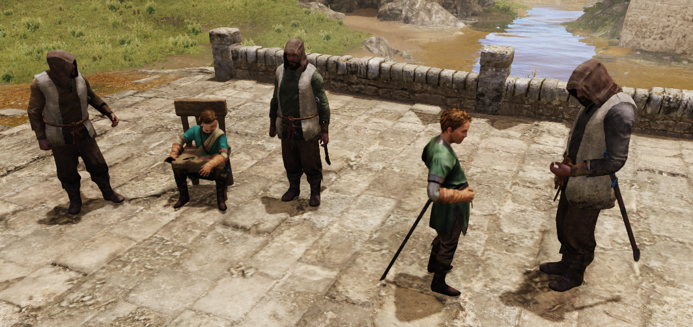

SCENE SPAWN POINT GUIDE
How to design fully featured scenes in Bannerlord
Each scene has own basic necessities to run without crashing and has extras to give better experience to player. Designers can check these necessities with “Spawn Point Debug Tool” to be sure that their scene will not crash.
1. Town Center Scene
Player will be spawned on the “sp_player_outside” prefab if he/she is entering the city for the first time, because of this feature “sp_player_outside” must be placed far from city’s entrance; otherwise player will be spawned on “sp_player” and this spawnpoint can be next to the entrance gate. Town center scene has some mandatory characters as follows:
| PLAYER SPAWN POINT |
|---|
| When player enters the town center from top right panel in the map scene, player and the conversation NPC will be spawned on “sp_player_conversation” prefab. Scene must have these prefabs more than 1 in order increase variation.
Warning The scale of the conversation prefab must not change. |
| TRADERS |
|---|
| Traders such as armorers, blacksmiths and horse merchants are mandatory for town center scenes. If scene has more than one market place, it is ok to have more then one trader NPCs. Traders in market places may have their own sets. These sets can be considered as prefabs with some spawn points in it. For example, for weaponsmith there can be 3 points in weaponsmith set but there must be 1 spawned weaponsmith. This NPC will go to these points randomly, in a word NPC may go to his/her selling table and start trading or go to the backside of his/her shop and sit on a chair for some time. Tip Designer may want to change these wait times between actions with “MinWaitInSeconds” and “MaxWaitInSeconds” parameters. (-1: forever). |
| NOTABLES |
|---|
Notable Parent Prefab
Scene must have some notables. In order to find them easy, notable spawn points must be placed near center area of the city. Every notable have their own spawn point tag and every notable have their unique helper characters.
| NOTABLE | SPAWN POINT TAG | HELPER CHARACTER TAG |
|---|---|---|
| Preacher | sp_notable_preacher | sp_preacher_notary |
| Gang Leader | sp_notable_gangleader | sp_gangleader_bodyguard |
| Rural Notable | sp_notable_rural_notable | sp_rural_notable_notary |
| Artisan | sp_notable_artisan | sp_artisan_notary |
| Merchant | sp_notable_merchant | sp_merchant_notary |
Notables have one parent prefab named “sp_notables_parent”. Each notable has 1 set as child so, parent prefab has 5 child notable sets.
Artists must place this parent prefab and put it in a prominent place of town center. Also prefab must be seen easily by player. After mission start, game logic will activate the notable set according to the notables in the town center.
In the notable sets, every notable will have unique helper character and their spawn point as well. (bodyguards for gangleader, notary for merchant…).
In the picture below. There were 2 parent prefabs in the scene. After mission start, one prefab is activated for gangleader and her bodyguards. Other prefab is activated for merchant and his notary.
Tip
Every settlement can have at most 6, every village can have at most 3 notables. So, artist must consider this and place at least 8 parent prefab for town center scenes and place at least 5 parent prefab for village scenes. And town center’s have 3 workshop. Each worshop must have 1 parent prefab. So, for town center scenes 8 + 3 (from workshops) ~10 parent prefabs must be added.
Warning
All points in the notable sets have rotations according to their motion capture animations, so don’t rotate the points or animations will not syncronize.

| GUARDS |
|---|
| There are some idle guards and patrolling guards. Patrolling guards are programmed as moving one point to another while activating the next point and deactivating the current one. |
| PASSAGES |
|---|
| Town center scene must include all passages to other scenes such as Tavern, Arena, Lords hall… |
| BATTLE SETS |
|---|
| For town scenes, battle sets are only used for common area clearing. so they should not be too far apart, and should be placed to represent a fight between gangs rather than a battle between armies. |
| TOWNSFOLK |
|---|
| NPCs are always moving around the city. In order to prettify the scene, designer may want to use some extra prefabs. If scene has “sp_npc_repair_set”, one NPC will go to that point and start hammering away while other NPC complains about the situation or scene may have some beggars begging for townsfolk help. |
2. Tavern Scene
| PLAYER SPAWN POINT |
|---|
| Spawnpoint for player, “sp_player”, must be placed nearby to the town center passage. Scene must include at least one “sp_player_conversation” prefab or more. Warning The scale of the conversation prefab must not change. |
| GAME HOSTS (GAMBLER NPCS) |
|---|
| Each tavern scene must have gambler (game host) NPC. The chair underneath NPC must have “gambler_npc” and “npc_wait” tags both. The chair which player will use to join game must have “gambler_player” and “reserved” tags both. |
3. Lords Hall Scene
| PLAYER SPAWN POINT |
|---|
| Player spawn points for Lords Hall scene is as same as Tavern scene. Spawn point for player must be placed nearby to the town center passage. |
4. Village Scene
| PLAYER SPAWN POINT |
|---|
| Village scene don’t have “sp_player_outside” prefab. “sp_player” prefab must not be placed far from village center nor very near. When spawned, player must see the walking villagers from afar. When player enters the village from top right panel in the map scene, player and the conversation NPC will be spawned on “sp_player_conversation” prefab. Scene must have these prefabs more than one in order to increase variation. Warning The scale of the conversation prefab must not change. |
| NOTABLES |
|---|
| Scene must have some notables. In order to find them easy, notable spawn points must be placed near center area of the city. |
| VILLAGERS |
|---|
| Villagers have lots of extra activities in village center such as collecting grapes, repairing something or grooming horse. The activities must be balanced between physical and social activities. Villager NPC may go and clean walls then sit and chat with others. |
| COMMON AREAS |
|---|
| Each village has 3 common areas which are not in the village center. Any type of spawn points can be used inside of the common area. “common_area_NUMBER” prefabs should be placed to specify the area. This prefabs has a script attached named “CommonAreaScript”. The script has some parameters as follows: |
| AreaRadius : Artist can change this parameter script to extend or reduce the area. |
| AreaIndex : Already set in prefabs for three common areas |
| Type : Type of the area should be set from the list below |
| AREA TYPES | SCENE | EXPLANATION |
|---|---|---|
| Backstreet | Town Center | Back alley where thugs are spawned |
| Clearing | Town Center | Open area |
| Waterfront | Town Center | Near coast or port |
| Pasture | Village | Pasture, forage (usually a heath or moor) |
| Thicket | Village | Shrubbery |
| Bog | Village | Swampy area |
| Forest | Village | Lots of trees |
| Ravine | Village | Valley or canyon |
| Spring | Village | Puddle in desert |
| Cove | Village | Bay |
| Marsh | Village | Swampy area near river |
| Wadi | Village | Valley, does not have rocks on both sides |
| BATTLE SPAWNPOINTS |
|---|
| If game is opening the scene with battle mode. Battle sets will be initiated and battle troops will be spawned on each. Battle sets must be placed far from each other, and with defender and attacker sides in mind. |